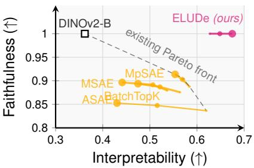

Figureure 1 · : ELUDe for interpretable disentanglementFigure 1: ELUDe for interpretable disentanglement. ELUDe decomposes a polysemantic unit at layer L into more monosemantic sub-units by restructuring incoming weights so that each sub-unit captures only a specific semantic concept. The sum of all sub-units exactly recovers the original unit activation, ensuring perfect faithfulness. On the right, we provide a concrete example of this process by showing highly activating images for an actual neuron from the last layer of a DINOv2 model alongside its disentangled ELUDe sub-units. While the original neuron reacts to multiple semantically unrelated images, the disentangled units are more coherent and interpretable.这张图/表用于判断 Interpretability Without Tradeoffs 的实验收益来自哪里。重点看替换、消融或跨模型设置下趋势是否一致，而不是只看单个最高分。

Figureure 2 · : Interpretability-faithfulness tradeoffFigure 2: Interpretability-faithfulness tradeoff. We compare faithfulness and interpretability across disentanglement methods; marker size indicates the expansion factor. Existing approaches exhibit a clear Pareto front, where higher faithfulness typically comes at the cost of lower interpretability. In contrast, ELUDe improves interpretability without sacrificing faithfulness, substantially advancing the Pareto front. See Section 4.1 for experimental details and clearer descriptions of the metrics.这张图来自论文 PDF 的结构化抽取。当前用于辅助理解 Interpretability Without Tradeoffs 的方法或实验，请结合正文精读段落一起看。